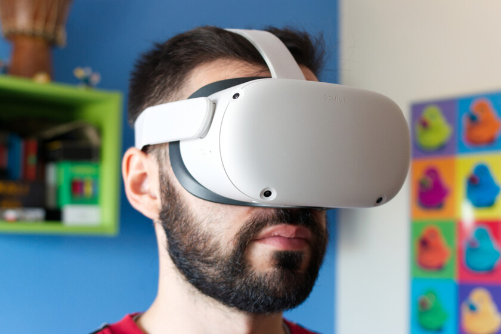
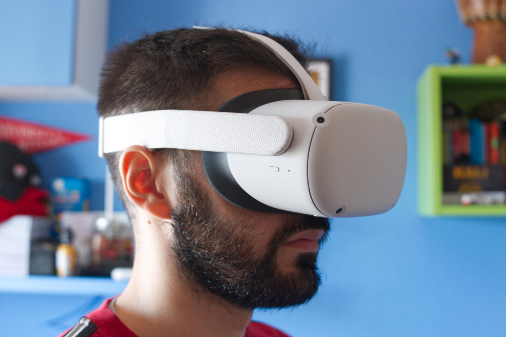
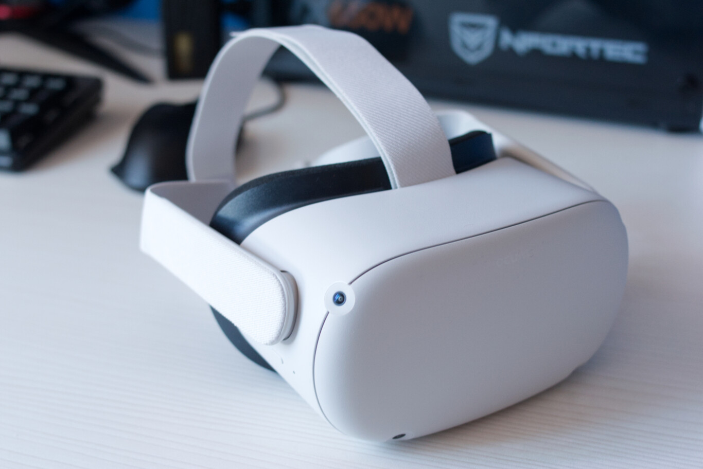
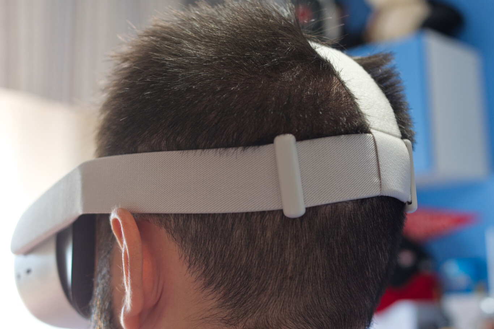
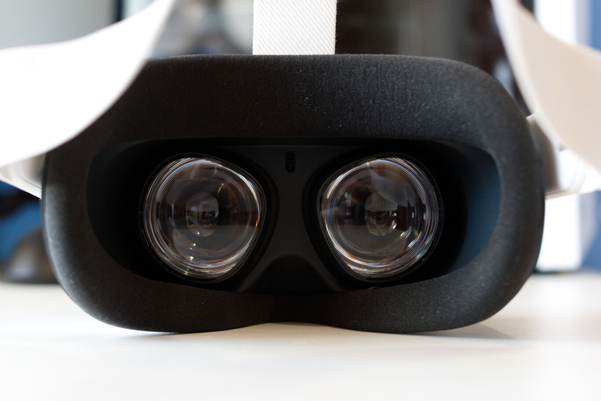
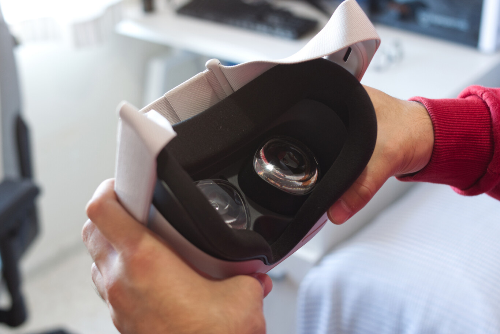
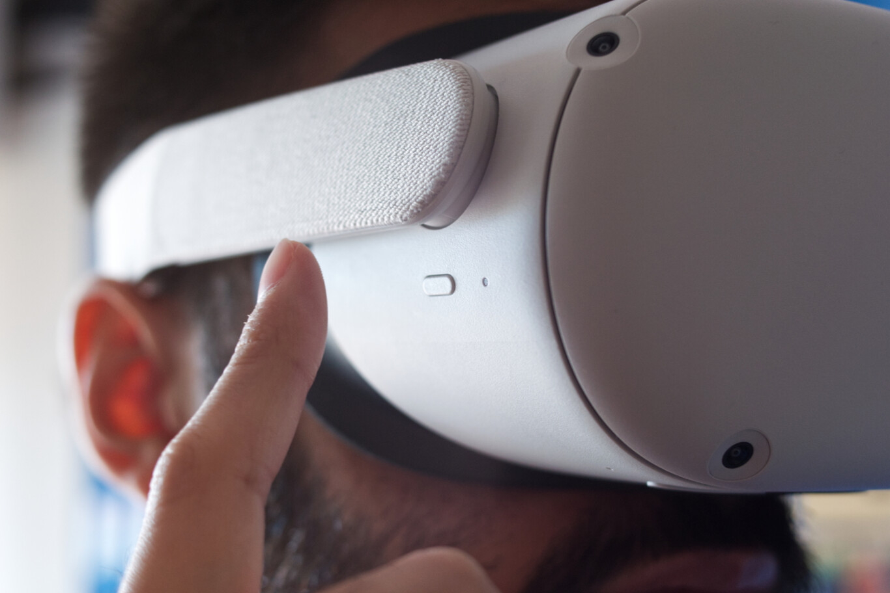

Oculus Quest 2, análisis: una de las mejores (y asequibles) opciones para iniciarse en la realidad virtual.
"¿Quién dijo que iniciarse en la realidad virtual suponía un desembolso de mil euros? Sí, puede suponerlo si buscas un casco de la gama más alta como el Valve Index, que solo el visor cuesta 539 euros, pero hay opciones más asequibles como la que hoy nos ocupa: las nuevas Oculus Quest 2, unas gafas de realidad virtual autónomas que parten de los 349 euros.
En Xataka llevamos ya unas semanas jugando con ellas, alucinando mientras pilotamos un Ala-X en 'Star Wars: Squadrons', intentando sobrevivir en 'Super Hot' y dándolo todo en 'Beat Saber'. Así pues, vamos a ver cómo se comporta y qué ofrecen estas nuevas gafas de realidad virtual en este, el análisis de las Oculus Quest 2.
Ficha técnica de Oculus Quest 2
| Oculus Quest 2 | CARACTERÍSTICAS |
|---|---|
| Peso | 503 gramos |
| Tipo de panel | LCD |
| Resolución | 1.920 x 1.832 por ojo |
| Frecuencia de Refresco | 90 Hz Capada a 72 Hz |
| Procesador | Snapdragon XR2 | Conectividad Inalambrica | WiFi 6 Bluetooth 5.1 |
| Puerto | USB tipo C |
| Almacenamiento | 64/256 GB |
| Sonido | 3D |
| Tracking | Cámaras internas |
| Elementos en el Paquete | visor, 2xmandos, 2 x pilas AA |
| Peso | 370 g (sin cable) |
| Precio | 64GB: 349 euros/256GB: 449 euro |
Puesta en marcha: ahora con Facebook
Una de las polémicas que han rodeado al lanzamiento de las Oculus Quest 2 es que el inicio de sesión ya no consiste en introducir una cuenta de Oculus, sino que ahora necesitamos una cuenta de Facebook que tendremos que asociar, si la tenemos, a nuestra antigua cuenta de Oculus. ¿Recordáis que a Palmer Luckey, fundador de la compañía, le dijeron que eso no sucedería? Pues ha sucedido.
En defensa de Facebook, la fusión de cuentas será opcional hasta finales de 2022, periodo tras el cual Facebook no garantiza "una funcionalidad completa" de las gafas. Decían desde Facebook que "tomaremos medidas para que puedas usar el contenido que compres después de 2022, aunque esperamos que algunos juegos y aplicaciones dejen de funcionar". En definitiva, Facebook sí o sí tarde o temprano.
En pocas palabras, a la larga tocará fusionar las cuentas. Como decía Thanos, "soy inevitable". ¿Supone esto alguna barrera de entrada a la hora de usar las gafas? Ninguna. Al contrario, basta con enlazar las cuentas, iniciar sesión con Facebook y listo, estamos listos para jugar. ¿Podría suponer eso una intromisión en nuestra privacidad? Es algo que queda en manos de cada usuario.
Dicho esto, para poner las gafas en marcha tenemos que usar la app Oculus, disponible en iOS y Android. Basta con iniciar sesión, elegir el modelo de gafas que queremos configurar, asegurarnos de que tenemos activado el Bluetooth y seguir las instrucciones, no tiene pérdida. A priori no es necesario usar el ordenador para nada, ya que las Oculus Quest 2, como las Oculus Quest o las Oculus Go, son autónomas, es decir, no necesitan que las conectemos al ordenador
Diseño: bien de comodidad, aunque siguen siendo pesadas

Comenzamos hablando del diseño, y hay algunos elementos a comentar. El primero es que el botón de encendido ha cambiado de sitio, situándose ahora en la zona derecha. En la parte inferior tenemos los botones de volumen en una posición cómoda y en la parte izquierda el puerto USB tipo C y el jack de auriculares. Veremos que aunque los altavoces integrados se escuchan bien, la experiencia gana enteros con auriculares.
En la parte delantera tenemos el frontal, simple, sencillo y minimalista con un elegante acabado en blanco. En las esquinas tenemos las cuatro cámaras de posición que ayudarán a que la cámara sepa dónde estamos y nos avise mediante una guía in game de que nos estamos saliendo. Recordemos que para jugar con este tipo de dispositivos es recomendable tener un espacio generoso para evitar estrellarnos contra un armario, os lo dice alguien que tiene un amigo al que le ha pasado (ejem, ejem).

Las Oculus Quest 2 están hechas de plástico y, aunque no transmiten una sensación excesivamente premium, se notan robustas. Es importante, en tanto que son unas gafas que piden a gritos ser transportadas para jugar en casas de amigos. Esta misma sensación la tendremos con los controladores, de los que hablaremos más adelante.
La correa es ajustable y el tacto, aunque no es excesivamente suave, es correcto. El mecanismo de ajuste es un poco complejo, ya que en lugar de tener un sistema de rueda, que es más cómodo y sencillo, tenemos un sistema de presillas algo complicado de manejar. La correa de la parte superior, la que tendremos sobre nuestra cabeza, se vale de un velcro que tendremos que apretar más o menos en función de nuestra cabeza.

Durante nuestras pruebas, y hemos jugado un buen puñado de horas, no hemos acabado con marcas de ningún tipo ni con molestias, más allá de la "incomodidad" que supone llevar un dispositivo de medio kilo en la cabeza. El peso está mayormente en el propio headset, por lo que en condiciones normales la cabeza se nos va un poquito hacia abajo, algo que tendremos que compensar haciendo fuerza. Es el problema de una tecnología que todavía tiene margen de mejora en cuanto a miniaturización..
La zona interior tiene una cubierta de gomaespuma suave, cómoda y que puede llegar a pegar algo de calor cuando las usamos durante mucho tiempo, aunque nada grave ahora que estamos en invierno. Las lentes, generosas en tamaño, se pueden mover tres posiciones para adaptarlas a la ubicación de nuestros ojos, algo que recomendamos encarecidamente hacer antes de ponernos a jugar. De hecho, es algo que tendremos que hacer durante la configuración de las mismas.

¿Son cómodas de usar con gafas? No de por sí, pero Oculus ha tenido a bien incluir un adaptador que añade algunos milímetros de espacio para que podamos usar el casco con las gafas y, con él, la experiencia es mucho mejor. ¿Problema? Que por el hueco que las Oculus Quest 2 dejan para nuestra nariz se filtra algo de luz. No mucho, pero está ahí. Cuando ponemos el adaptador, ese espacio también aumenta, por lo que no tendremos los ojos completamente sellados. No es que sea muy incómodo, pero si miras hacia abajo podrás llegar a ver el suelo de la estancia, saliéndote así un poquito de la realidad virtual.
Experiencia y rendimiento: realidad virtual asequible con un "pero"
Pero vayamos al grueso del asunto: la experiencia en videojuegos. Las Oculus Quest 2 montan un procesador Snapdragon XR2. Le acompañan, en nuestro caso, 64 GB de almacenamiento interno, aunque hay una versión con 256 GB de almacenamiento. Este nos servirá para almacenar juegos en las propias gafas, algo que tiene sentido si tenemos en cuenta que son autónomas, aunque también podemos conectarlas al ordenador.
Primero veremos el rendimiento con juegos instalados en las gafas y luego ahondaremos en las opciones para conectarlos al PC. Cuando las usamos de forma autónoma el rendimiento es más que correcto, muy bueno, hasta el punto de que no hemos notado ningún tipo de lag o salto de frame que nos saque de la simulación. Los gráficos no son comparables a los que conseguiremos conectando las gafas al PC, pero la experiencia es muy positiva. En última instancia dependerá de cada juego.
Con las Oculus Quest 2, Oculus/Facebook ha dado un salto en resolución notable que se agradece dentro de los juegos. Los dos paneles LCD que tenemos en el interior ofrecen una calidad de imagen muy buena, con unos colores naturales, aunque no al nivel de los paneles OLED. Es difícil describir los gráficos de las Oculus Quest 2, pero podemos quedarnos con la idea de que el salto con respecto a las generaciones es sustancial y nos ha dejado con muy buen sabor de boca.
Sobra decir que a la distancia a la que tenemos los ojos de las lentes y con semejante cantidad de píxeles a lo ancho y a lo alto es imposible distinguir los píxeles de los juegos. Oculus ha hecho un trabajo excepcional con sus gafas de realidad virtual y jugar con ellas es toda una gozada.

Otra cosa que podemos hacer con estas gafas es ver películas en servicios de streaming como Netflix, cuya interfaz, por cierto, es de lo más curiosa. Para ello hay que seleccionar dichos servicios en Oculus Home. Es como un salón con una enorme pantalla en la que se reproduce el contenido. Muy, muy curioso, aunque si me preguntas a mí prefiero ver una película o serie en mi televisor, pero no está mal que las gafas den la opción.
Pasamos así a los juegos de ordenador (véase de Steam), un proceso que sigue siendo más laborioso de la cuenta. Idealmente, debería ser tan sencillo como conectar las gafas, que Steam VR las detecte y empezar a jugar, pero hay que hacer todo un proceso de configuración que puede generar cierta fricción al menos la primera vez. Lo bueno es que hecho una vez, aprendido a hacer todas las veces.
Oculus Quest 2, la opinión de Xataka

En resumidas cuentas, las Oculus Quest 2 son unas gafas de realidad virtual excepcionales y, probablemente, de las mejores que podemos comprar a día de hoy para iniciarnos en la realidad virtual sin hacer un desembolso elevado. No son perfectas ni mucho menos y tienen margen de mejora, sobre todo en lo relacionado con los 90 Hz, pero por 349 euros ofrecen un rendimiento sobresaliente.
Cuando las pruebas, la sensación es que es increíble que un dispositivo que no requiere de sensores de posición y que es tan sencillo de usar como ponérnoslo en la cabeza y encenderlo funcione tan bien. Los juegos ejecutados en las gafas se ven perfectamente y tener la opción de conectarlas al PC y jugar a los títulos AAA de Steam es, sencillamente, fabuloso.
La experiencia con las Oculus Quest 2 es sobresaliente, y más teniendo en cuenta su precio
Lejos de ser unas gafas de realidad virtual perfectas, son una excelente puerta de entrada a este mundo que todavía tiene mucho camino por delante en cuanto a contenido. Si quieres iniciarte en la realidad virtual y no quieres gastarte los más de mil euros que cuestan las Valve Index y compañía, las Oculus Quest 2 son una alternativa a tener muy, muy en cuenta.